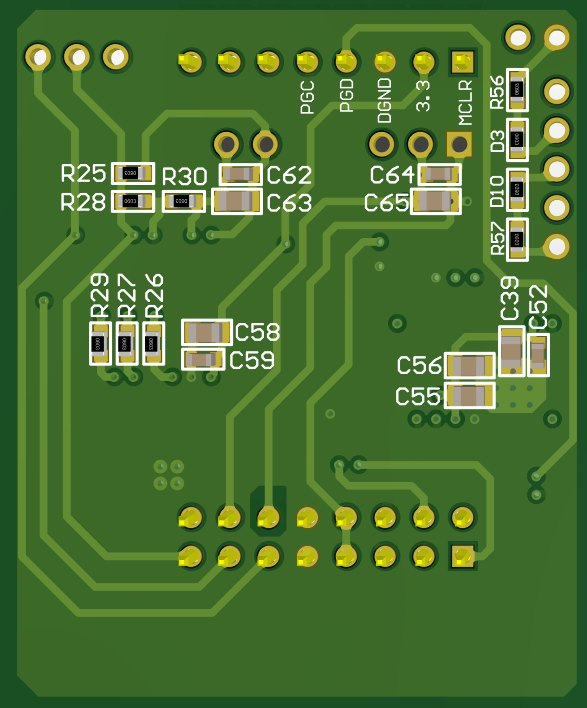
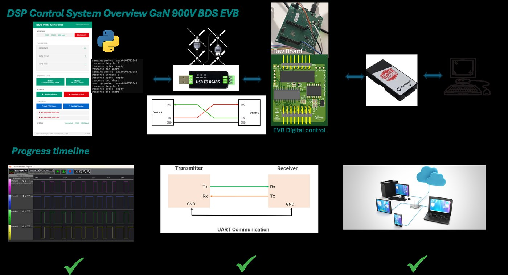
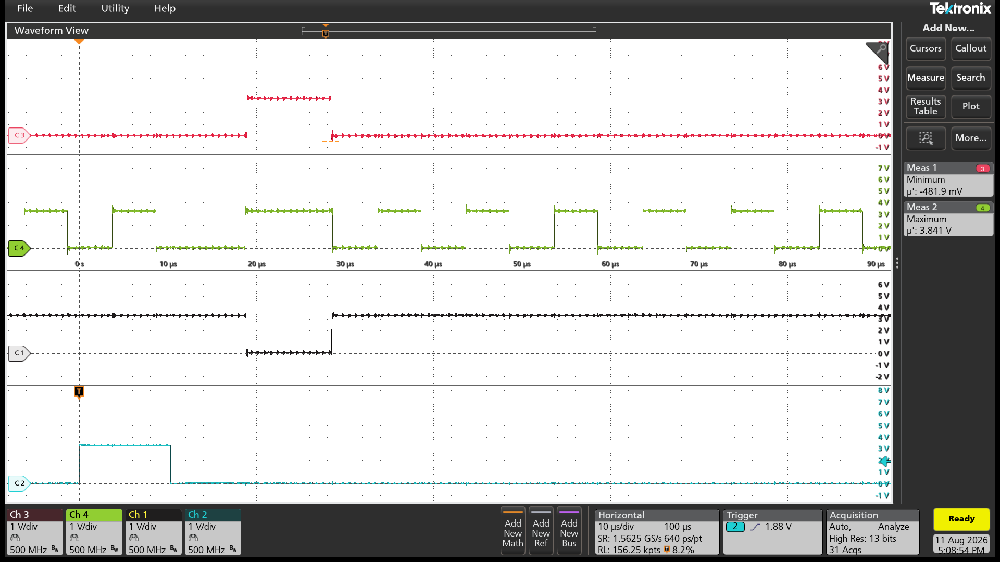
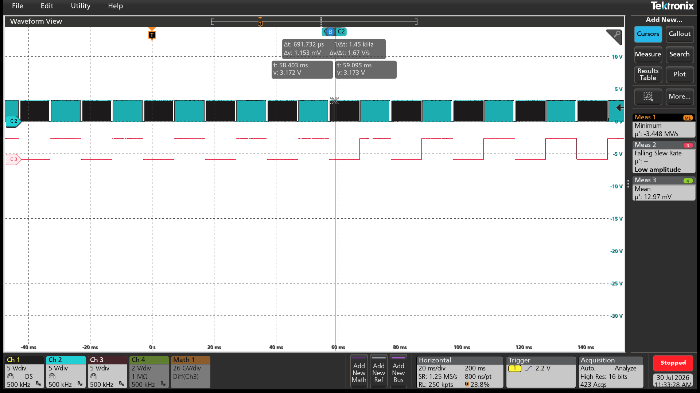
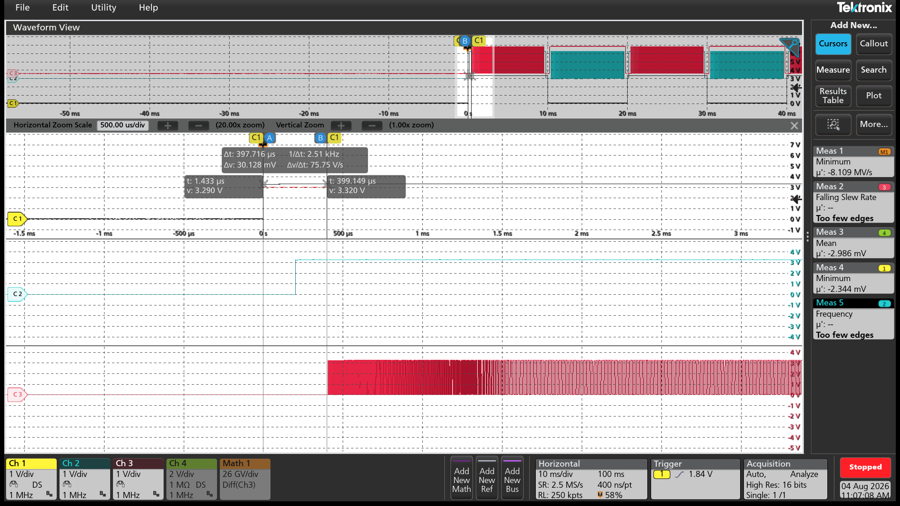

Universal ZVS & Characterization Platform for 900 V GaN BDS
A dsPIC control daughter card and Python GUI that drive a 900 V GaN bidirectional switch through soft-switching, converter and pulsed-characterization modes — built to stay accurate in an EMI environment that eats ordinary serial links.
The problem
Characterizing a new bidirectional GaN device means changing switching frequency, duty cycle, dead-time and gate mode constantly — on a converter running hundreds of volts. Doing that by reflashing firmware or reaching into a live power stage is slow and unsafe.
It is also electrically hostile. GaN slews at roughly 100 V/ns, and the inductive currents around the stage will corrupt a plain single-ended UART link without much effort.
What I built
A dsPIC33 daughter card sits on the evaluation board and owns everything real-time critical: PWM generation, dead-time insertion down to nanosecond steps, special-event triggering and the RDS(on) measurement cycle. A Python GUI on the host sets operating mode, switching frequency, duty cycle, dead-time and gate configuration.
Communication runs over RS-485 differential signalling with a CRC layer on top, so a corrupted command is rejected rather than executed. That combination — differential physical layer plus integrity check — is what makes remote control trustworthy next to a switching GaN stage.


Operating modes
| AC-ZVS | Polarity detection with adaptive PWM to avoid shoot-through |
| DC-ZVS | DC-side zero-voltage switching |
| Buck / Boost (SSW) | Converter operation via the same gate engine |
| Dynamic pulsed | Ron measurement, dynamic saturation current |
High-frequency operation includes a single 25–50 kHz pulse used for on-state resistance measurement. Four gate operation modes are selectable from the GUI.
Platform is also compatible with unidirectional devices — MOSFETs and unidirectional GaN switches.
System architecture

Bench measurements
Captures from bring-up and mode validation on the Tektronix bench.



Bandwidth limiting varies with the timescale — 500 MHz for the microsecond-scale gate timing, dropped to 1 MHz and 500 kHz for the longer windows. Around a stage slewing at roughly 100 V/ns, leaving the full bandwidth open on a millisecond capture buys you radiated noise rather than signal.
What's next
Bidirectional device support is the current focus, along with streaming measurement data straight from the firmware into the analysis pipeline rather than capturing it separately on the scope.